Damos o Caminho›Subsídio de Mobilidade
nDm · Subsídio de Mobilidade
The State refunds island residents most of the ticket price. The money lands in your bank account — if you get through five portal screens and correctly copy seven figures from the airline invoice. Here is every screen and every field — and where people lose the money.
Free, no registration. We do not file anything for you — we show you how to file it yourself.
The form will not let you go further without these, and you cannot go back and add something mid-claim — the draft loses fields. So gather everything first, then start.
Whether you are eligible at all — three questions, half a minute. What exactly is refunded and how much — How much money and what for.
Below is a real claim: Funchal → Lisbon → Funchal, TAP, Madeira resident. Approved and paid. Every figure in the steps is taken from its invoice, and we show which line each one comes from.
Copagamento of €79 is the share the passenger pays themselves; it is always deducted. Where the other figures come from, and what is never refunded — How much money and what for.
The list of steps is visible on the left of the portal. You cannot click through it — you can only go back with the Anterior button, one step at a time. Worth knowing in advance.
The first screen asks nothing. All six fields are grey — name, NIF, postcode, town, email and phone come from Autenticação.gov, and cannot be changed here. There is only one live element.
ssm.gov.pt
On a computer the portal opens in a separate window on the right — the instructions stay on the left. Login only via Chave Móvel Digital or a citizen card. On the portal home page, click Submeter Pedido.
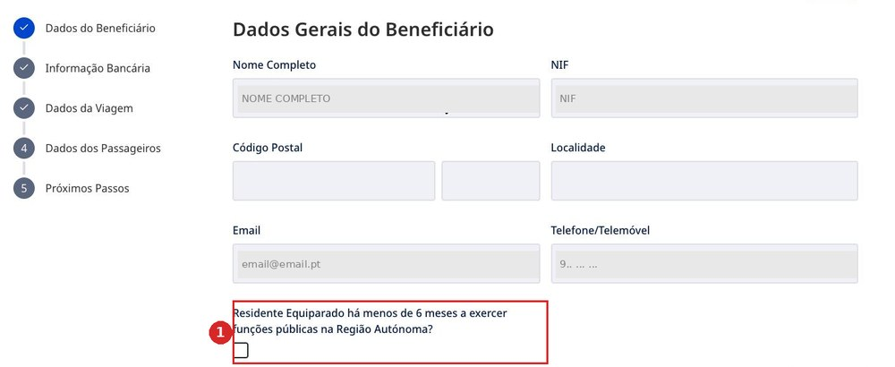
There is no “back” button on the first step — only Seguinte.
Código Postal and Localidade cannot be filled in here or in the personal area — the portal shows the fields but does not let you edit them.
This does not affect eligibility: in our claim the postcode is blank and the status is Validado.
One field. It too is grey: the portal fills in whatever is in the profile.
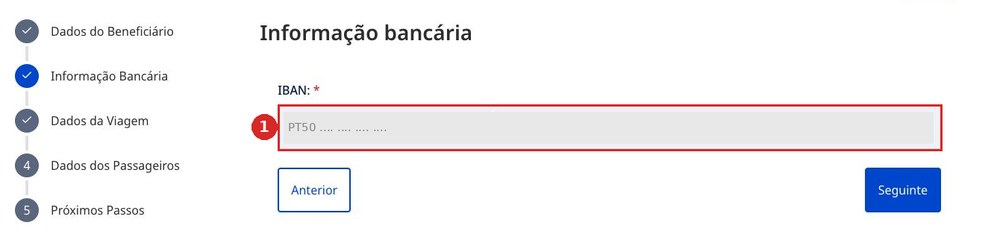
The money will go to this exact IBAN. Go back to the home page, open Área Pessoal, fix the account — and only then start the claim.
The longest screen. It splits into three parts: the invoice, the route and two files. We go through each part, and show where every figure in the invoice comes from.
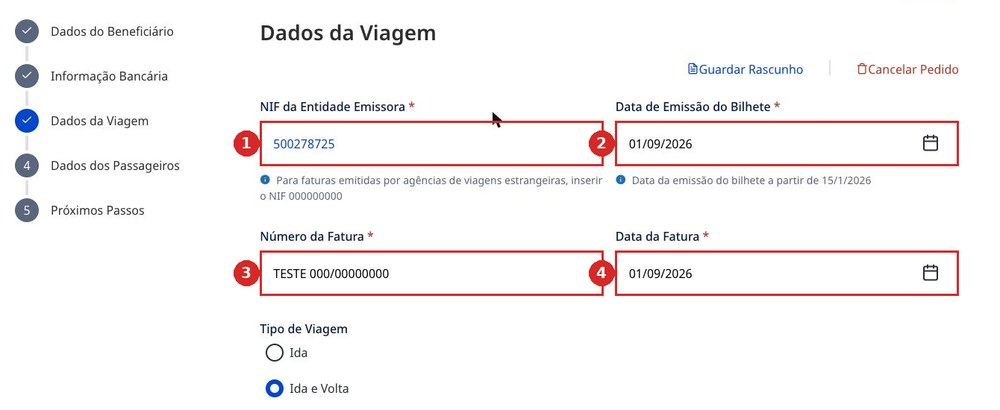
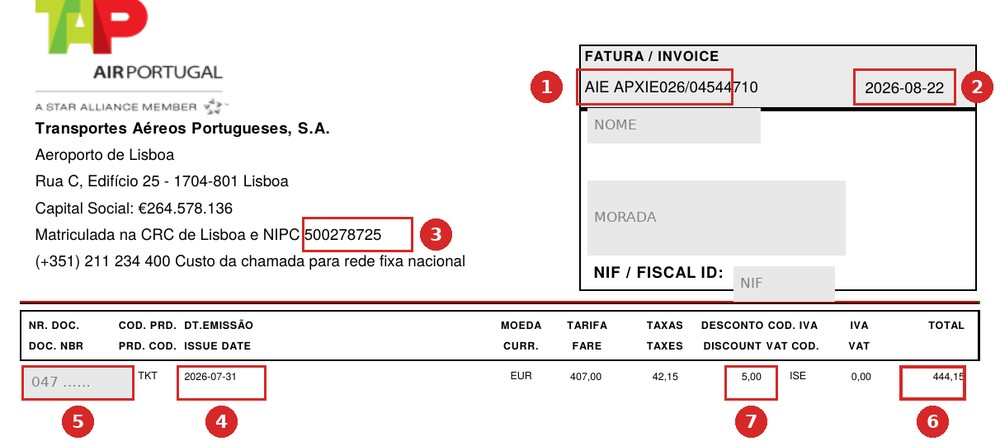
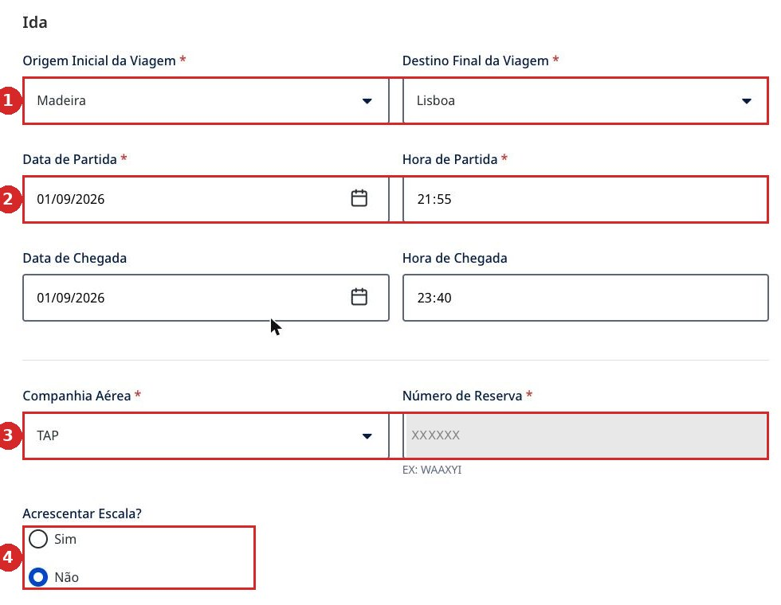
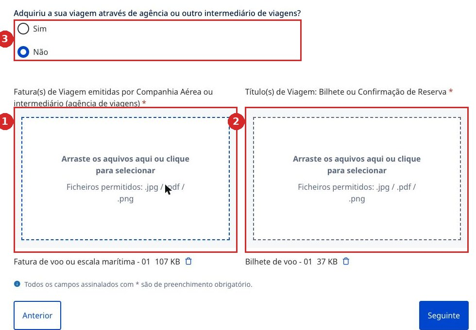
The two documents are not interchangeable. And an extra document is also an error: a real correction notice reads O documento submetido não é necessário — “the attached document is not needed”.
How to request both documents from TAP is shown in Documentos TAP — opens in a new tab.
This is where the money appears. Seven figures, all seven copied from the invoice — the file AIE APXIE026_….pdf that TAP sends on request (how to request it — Documentos TAP). Which fees are refunded and which are not — How much money and what for.
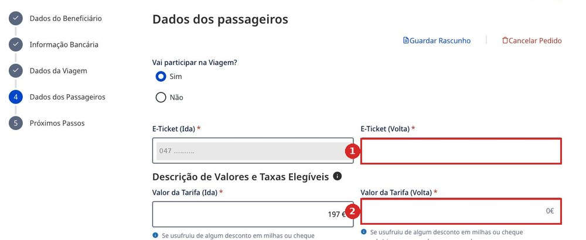
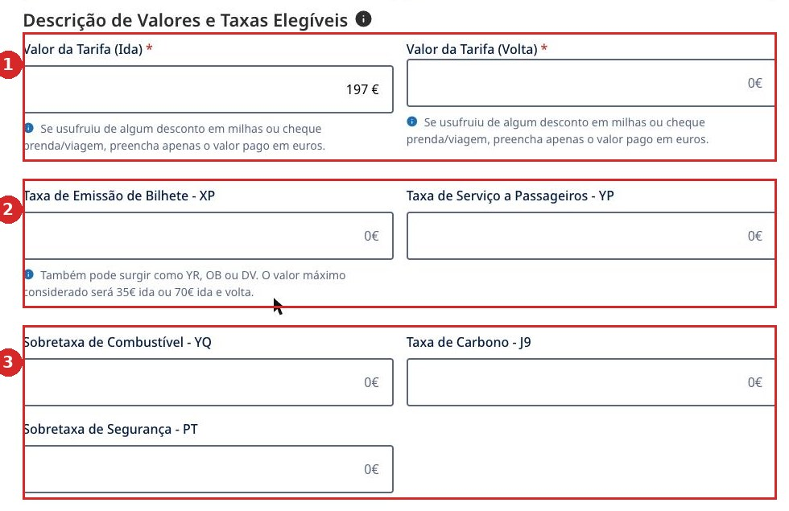
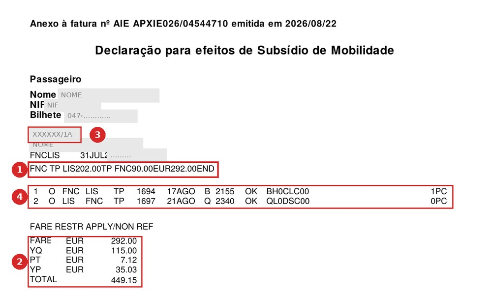
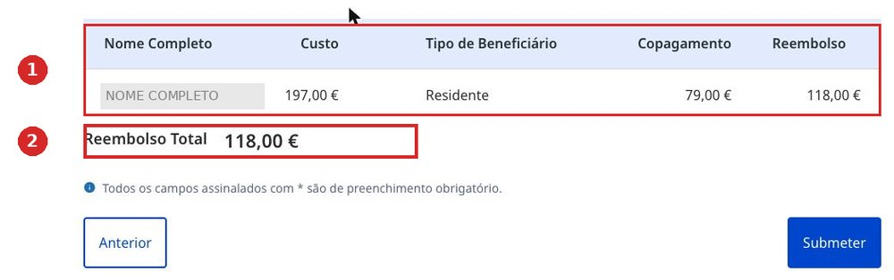
We saved a draft at €208, left and came back — the return leg had vanished: E-Ticket (Volta) blank, Valor da Tarifa (Volta) zero, the total down to €118.
And it was not a display glitch: after leaving, the claims list also showed €118. Fill it in and submit in one sitting.
In our invoice, the fare calculation line gives an outbound fare of 202.00, and page one shows a DESCONTO of 5.00. What went into the portal was 197.00 — that is, 202.00 minus the discount. Custo came out at 444.15, exactly matching the invoice's TOTAL, and the claim was approved.
The check is simple: add up both fares and all the fees. It should come to exactly the TOTAL on page one. If it comes to more, the discount was not deducted.
The fifth screen appears only after clicking Submeter. We do not have a screenshot yet — we have not submitted a real claim just for the picture. We will go through it on the next real flight and add it here. To be honest: this step is not shown yet. What happens after submission — below, “How long to wait”.
Short, to keep in view while filling in the form. The invoice is the file AIE APXIE026_….pdf from TAP, two pages; page two is called Declaração para efeitos de Subsídio de Mobilidade. How to request it — Documentos TAP.
| Portal field | Where on the invoice | What to watch for |
|---|---|---|
| Valor da Tarifa (Ida) Valor da Tarifa (Volta) | P. 2, fare calculation line | Two figures in a row: …LIS202.00TP FNC90.00 |
| Taxa de Emissão de Bilhete - XP | P. 2, fees block | May appear as YR, OB or DV. Capped at €35 / €70 |
| Taxa de Serviço a Passageiros - YP | P. 2, YP line | Airport fee per passenger |
| Sobretaxa de Combustível - YQ | P. 2, YQ line | Usually the largest fee |
| Taxa de Carbono - J9 | P. 2, J9 line | Often missing from the list — means zero |
| Sobretaxa de Segurança - PT | P. 2, PT line | Shown simply as PT on the invoice |
| Número de Reserva | P. 2, above the fare line | Six characters before the slash |
| Número da Fatura | P. 1, top right | With the letters: AIE APXIE026/… |
| Data da Fatura | P. 1, next to the number | Invoice date, not departure date |
| Data de Emissão do Bilhete | P. 1, DT.EMISSÃO column | A different date — when the ticket was issued |
| E-Ticket | P. 1, NR. DOC. column | 13 digits, starting with 047 |
| NIF da Entidade Emissora | P. 1, top left | 500278725 — in the NIPC line |
| Check | P. 1, TOTAL and DESCONTO columns | Sum of all portal fields = TOTAL. Deduct the discount from the outbound fare |
The claim goes through a human operator: they open every attached file and approve it separately. That is what takes the time.
| Event | When | What happens |
|---|---|---|
| Submeter Pedido | 0 | The claim is sent |
| Em Análise | immediately | The status changes automatically |
| Aprovar of the documents | from an hour | The operator opens each file separately |
| Aprovado | 2–11 days | The six-month residence criterion is checked |
| Pagamento Efetuado | +2–4 days | The money is sent to the IBAN |
Across three real claims, filing to payment took 15, 12 and 2 days. The spread is wide, and depends on how quickly the operator gets to the last attached file. Track a claim under Histórico de Pedidos on the portal home page.
This is not a refusal. The claim is sent back for correction, then reviewed again. Here is a real notice — and both reasons in it are exactly about what this page covers.
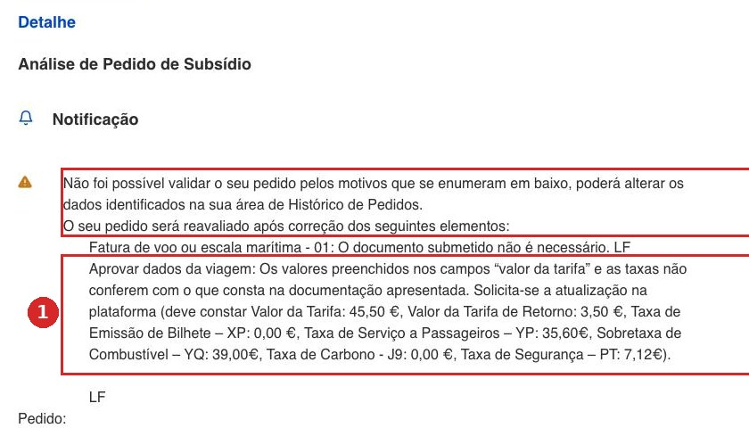
“Your claim could not be confirmed for the reasons listed below. The claim will be reviewed again once the following has been corrected:
— Fatura de voo ou escala marítima - 01: the attached document is not required.
— The values in the fields “valor da tarifa” and the fees do not match the submitted documents. Please update the data on the platform (should be: Valor da Tarifa €45.50, Valor da Tarifa de Retorno €3.50, XP €0.00, YP €35.60, YQ €39.00, J9 €0.00, PT €7.12).”
What to do: open Histórico de Pedidos, go into the claim and correct exactly what is listed. The operator usually writes the correct figures themselves — but the letter arrives two weeks after submission. Easier to copy the figures from the invoice correctly the first time.
What this page covers in one line is set out separately elsewhere.
The only contact on the whole portal is infossm@ctt.pt. No phone, no chat, no feedback form. Write in Portuguese and always include the Número de Pedido.
Since 6 June 2026, Lei n.º 23/2026 has been in force: the subsidy was renamed Mecanismo de Continuidade Territorial, the reimbursement cap was removed, and the portal has not yet been updated to match. What this changes for you — What changed in the law.